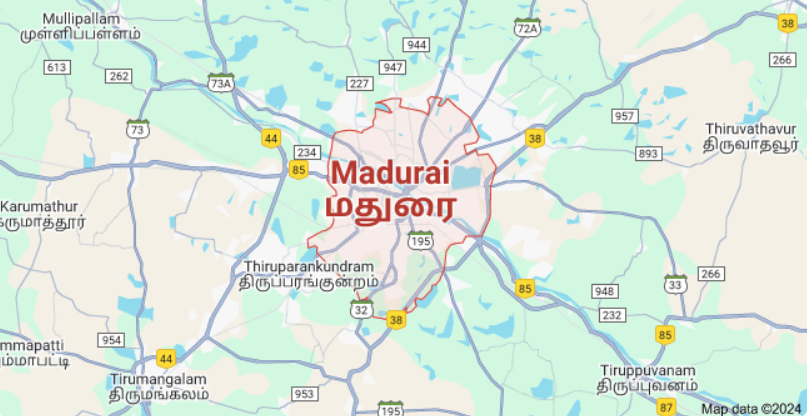

Water Resource Management Dashboard
Welcome to your dashboard. Navigate using the sidebar.
Past Records
| District | MADURAI |
| State | TAMIL NADU |
| Geographic Area | 384,680 hectares |
| Latitude | 9.939093 |
| Longitude | 78.121719 |
| Annual Average Soil Moisture | 22.62% |
| Annual Average Evapotranspiration | 2.03 mm |

| Male | 2,264,727 |
| Female | 2,228,061 |
| Total Population | 4,492,788 |
Rainfall Data (2010-2020) (mm)
Groundwater Level Data (2010-2019) (mm)
Soil Moisture Data
Evapotranspiration Data
Irrigation Data
Industry Water Usage
Livestock Data
Livestock Population
Water Usage by Livestock
Existing Reservoirs
Data about current reservoirs and their storage capabilities...
Irrigation by Different Sources
| Sl. No. | Particulars | Numbers | Area (in ha) |
|---|---|---|---|
| 1 | Canals | Gross: 80 | Gross: 18998 |
| Net: 17828 | |||
| 2 | Tanks | Gross: 2289 | Gross: 18500 |
| Net: 17837 | |||
| 3 | Tube wells / Bore wells | Gross: 697 | |
| Net: 662 | |||
| 4 | Open wells | Gross: 42469 | |
| Net: 38949 | |||
| 5 | Supplementary wells | Gross: 797 | |
| Net: 797 | |||
| 6 | Other Sources | Gross: 0 | |
| Net: 0 |
Sources of Irrigation (in hectare)
| Sl. No. | Particulars | 2012-13 | 2013-14 | 2014-15 | Average |
|---|---|---|---|---|---|
| 1 | Canals | Gross: 5804 | 17114 | 18998 | 13972.00 |
| Net: 5502 | 16155 | 17828 | 13161.67 | ||
| 2 | Tanks | Gross: 7163 | 12895 | 18500 | 12852.67 |
| Net: 7157 | 12656 | 17837 | 12550.00 | ||
| 3 | Tube wells / Bore wells | Gross: 444 | 294 | 697 | 478.33 |
| Net: 444 | 294 | 662 | 466.67 | ||
| 4 | Open wells | Gross: 32526 | 34648 | 42469 | 36547.67 |
| Net: 32121 | 33476 | 38949 | 34848.67 | ||
| 5 | Supplementary wells | Gross: 780 | 796 | 797 | 791.00 |
| Net: 780 | 796 | 797 | 791.00 | ||
| 6 | Other Sources | Gross: 0 | 0 | 0 | 0.00 |
| Net: 0 | 0 | 0 | 0.00 |
Details of Dams in Madurai District
| Sl. No. | Name | Water spread area (ha) | Capacity (MCFT) | Potential area for irrigation (ha) | Present status |
|---|---|---|---|---|---|
| 1 | Sivaganga Dam | 33.12 | 41.46 | 317.38 | 596.96 |
| 2 | Vaigai Dam | 24.20 | 21.64 | 172.60 | |
| 3 | Peria Aruvi Dam | 16.00 | 12.46 | 24.00 | |
| 4 | Sathiyar Dam | 9.24 | 8.84 | 0.63 |
Source: Season and Crop Report, 2014-15
Source: Assistant Engineer, P.W.D., Madurai & Melur.
Future Water Requirements
Predicted future water requirements...
Water required for Irrigation
Water required for Industries
Water Requirements for Taluks and Blocks in Madurai
Scenario Planning
Plan for extreme weather events...
Scenario Planning for Drought and Heavy Rainfall
| Scenario | Possibility (%) |
|---|---|
| Drought |
0%
|
| Heavy Rainfall |
0%
|